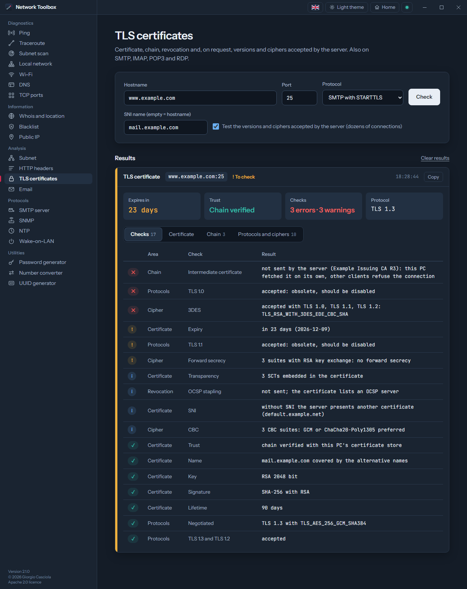
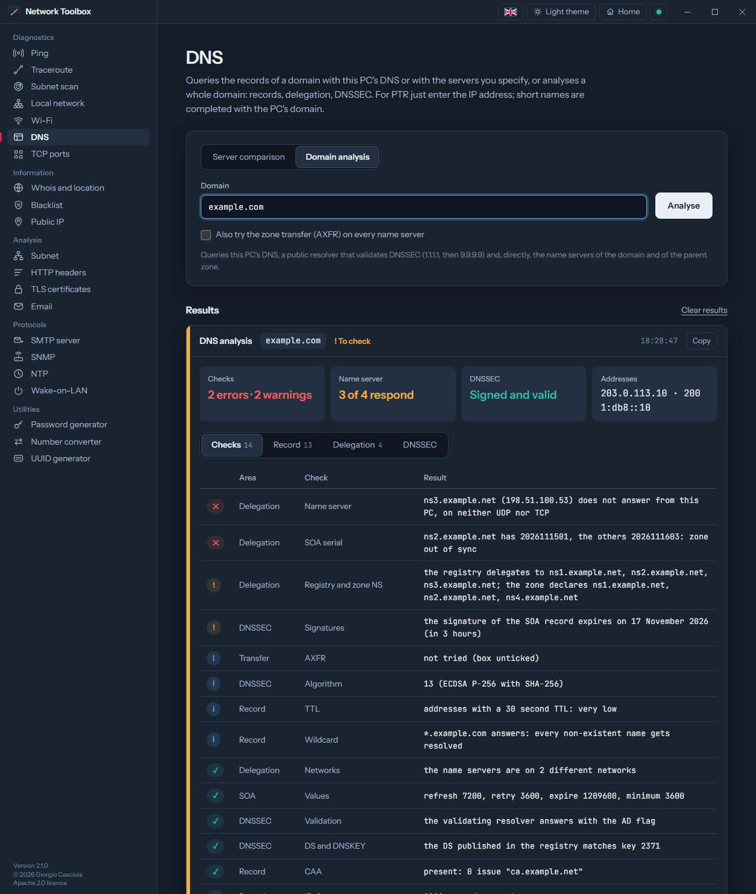
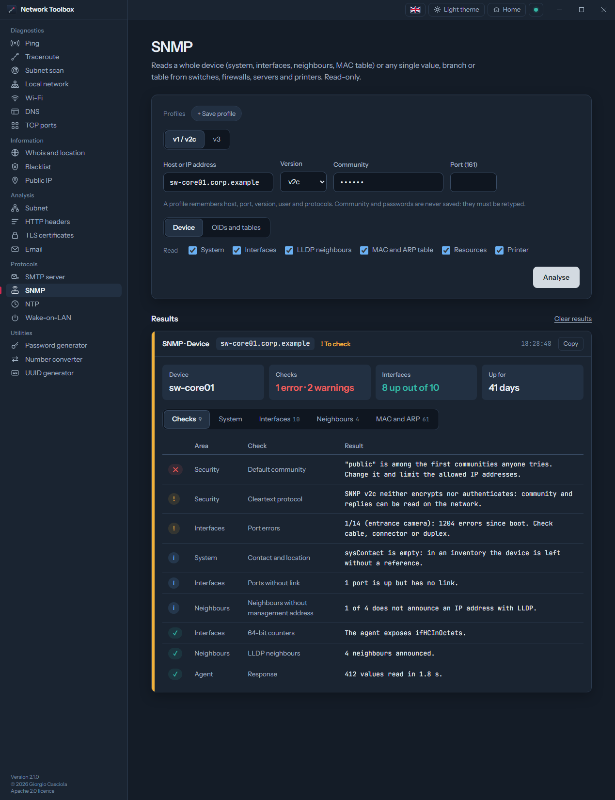
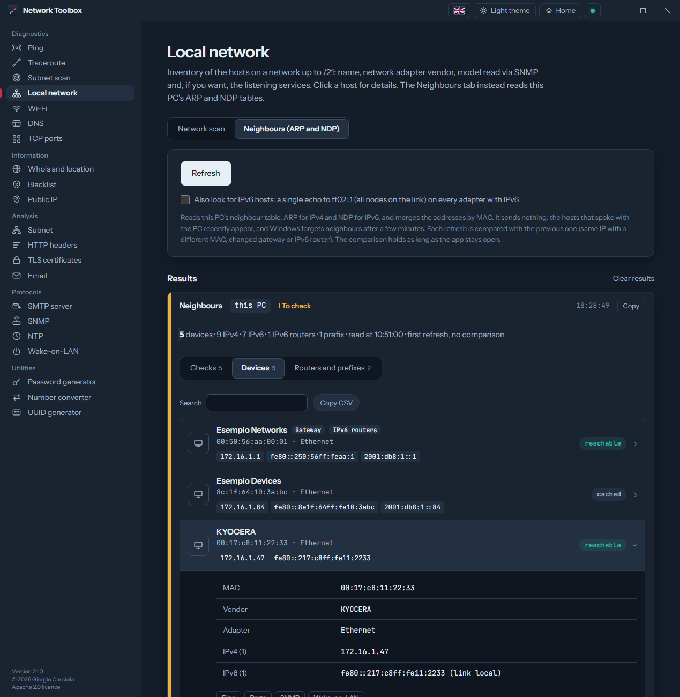
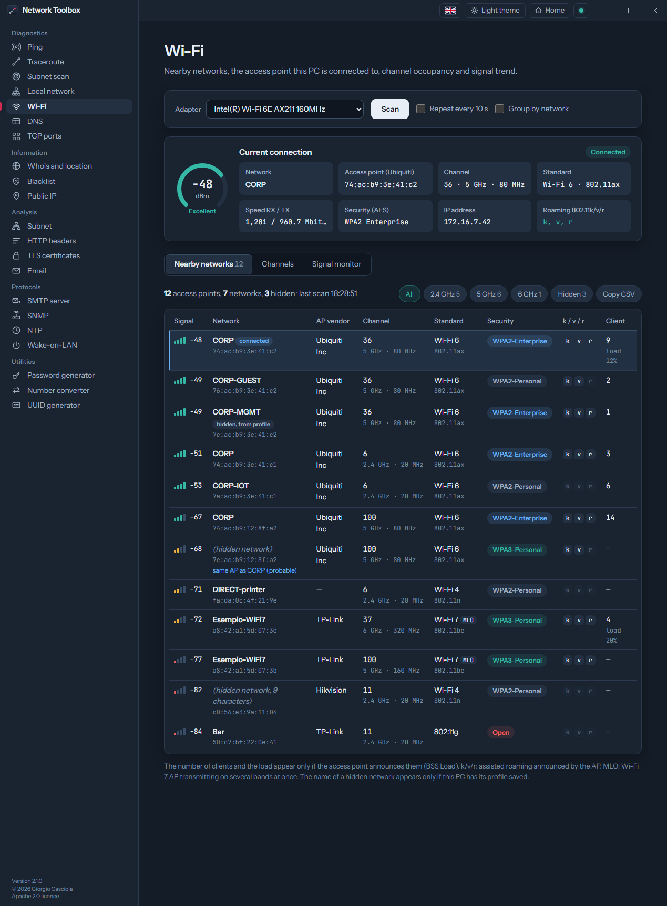
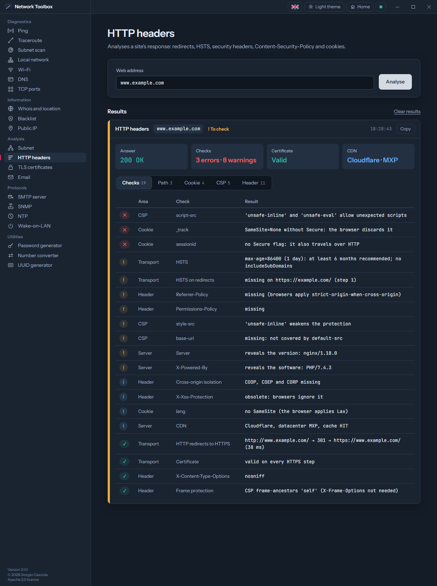

Diagnostics
Live ping and traceroute with host names, a fast subnet scan, TCP port scanning, and a Local network inventory up to /21 with name, vendor, SNMP model, device type and services. Plus the ARP/NDP neighbour tables of the PC.
Ping, traceroute, scans, DNS, TLS, SNMP, Wi-Fi and more. Every test starts from your own PC, with results that come as a clear list of verdicts, not a wall of raw output.
The everyday toolbox of a network administrator, with the depth you would normally get from several separate programs.
Live ping and traceroute with host names, a fast subnet scan, TCP port scanning, and a Local network inventory up to /21 with name, vendor, SNMP model, device type and services. Plus the ARP/NDP neighbour tables of the PC.
Compare the answers of several servers side by side, or analyse a whole domain: delegation, SOA, name server health, DNSSEC chain and zone consistency.
Certificate details and chain, revocation info, accepted protocol versions and cipher suites, STARTTLS for SMTP, IMAP, POP3 and RDP. HTTP headers analysed as a security review: redirects, HSTS, CSP, cookies, CDN.
SPF evaluated with the full lookup tree and the 10-lookup limit, DMARC, DKIM keys, MTA-STS and TLS-RPT. Paste a message header to follow its path, delays and authentication results.
Read-only v1, v2c and v3. Device overview, interfaces, LLDP neighbours, MAC and ARP tables, host resources, printer supplies and live counters. The app never sends a SET request.
Nearby networks with channel, width, standard and security, channel recommendations, and a signal monitor that records roaming and drops.
Whois and location, blacklist (DNSBL) lookup, public IP, subnet calculator, SMTP server test, NTP and Wake-on-LAN.
Password generator with exact entropy, number converter for decimal, hex, binary and dotted IPs, and a UUID generator. All local; secrets never touch the clipboard history.
The analysis tools do the reading for you. Every finding is a check with a status and a one-line explanation, sorted by severity so the problem is at the top.
A frameless window with the tools in a side menu. Screenshots show the English interface with sample data and reserved example names and addresses.






No server component, no analytics, no update check. The author never receives any data.
Probes go from this machine to the targets you enter, only when you press the button. No cloud relay in between.
The app only reads. It never sends SET requests, and community strings and passwords are never saved.
Rust and Tauri 2, Apache License 2.0. Read the code, build it yourself, check the SHA-256 of every download.
The only traffic not started by a tool is on the Home screen: a ping to public DNS addresses to show Internet reachability and, while that view is open, a request to ipinfo.io for your public IP.
Windows 10 or 11, 64 bit, with the WebView2 runtime (already present on current Windows versions).
The .msi package (recommended) or the -setup.exe. Installs the app and adds a Start menu shortcut.
The -portable.zip needs no installation: unzip anywhere, even on a USB stick, and run NetworkToolbox.exe. Settings stay in a data folder next to it.
Clone the repository and follow the build notes in the README. Rust, MSVC Build Tools and the Tauri CLI are all you need.
Source codeCheck the download against SHA256SUMS.txt on the release page:
Get-FileHash .\NetworkToolbox.msi -Algorithm SHA256
Releases are signed with a certificate provided by the SignPath Foundation. If you use an unsigned build, Windows SmartScreen may show "Windows protected your PC" and some endpoint protection products may hold back the first run of the scanning tools. Verify the hash, or build the program yourself.
Responsible use. Subnet scan, Local network, TCP ports, SNMP, SMTP and TLS send real traffic, and security products will record it. Use them only on networks and hosts you own or are authorised to test.